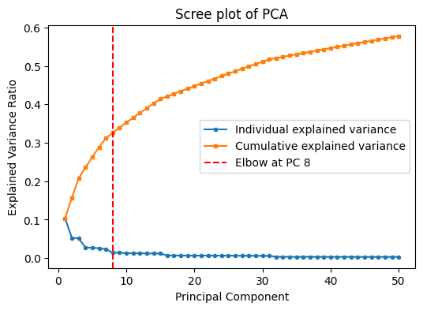
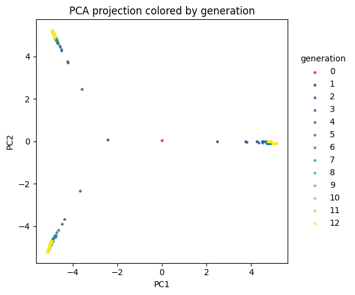
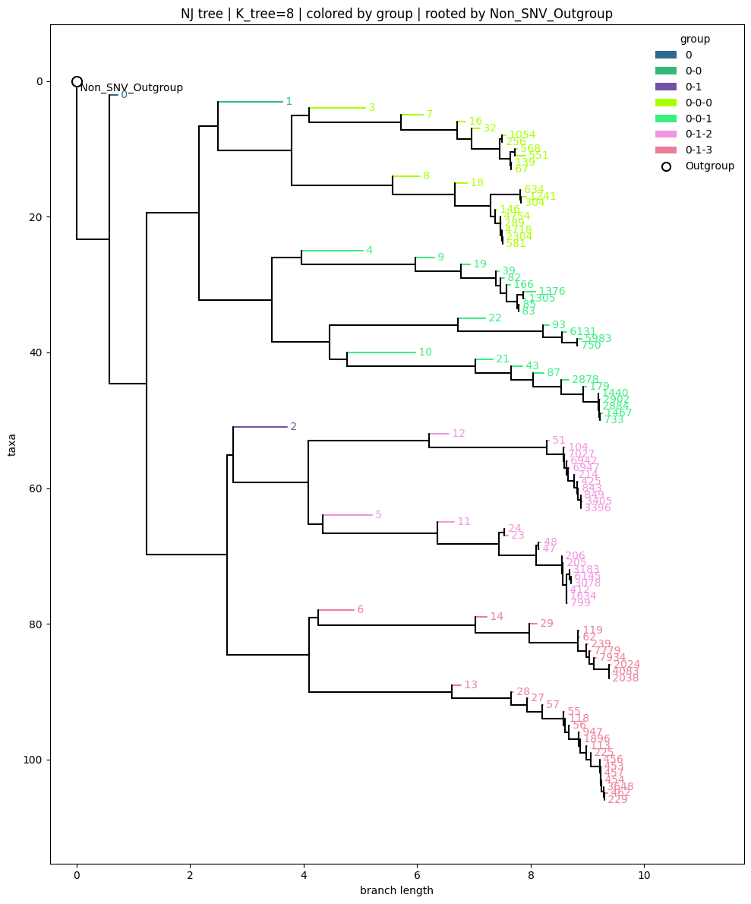
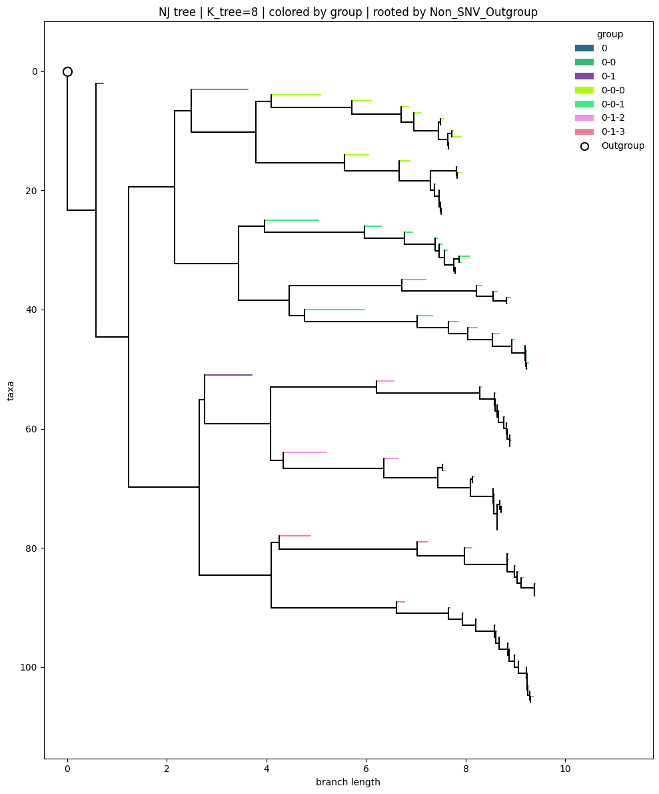
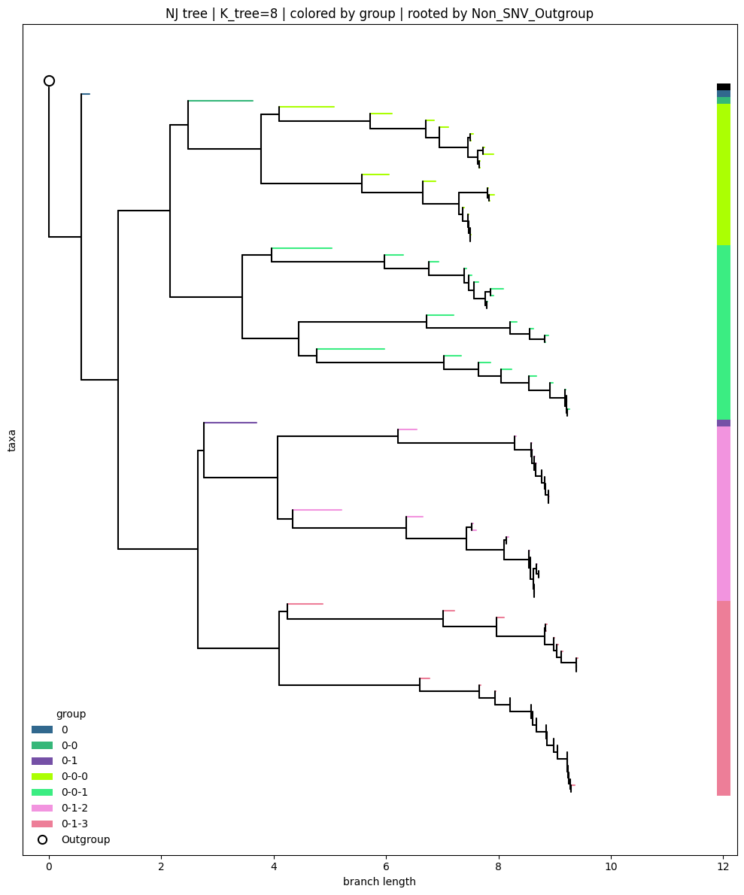

Tutorial for NJ tree construction with a simulated dataset
import os
import re
import sys
import anndata as ad
from pathlib import Path
import pandas as pd
import scanpy as sc
import numpy as np
import scipy.sparse as sp
from kneed import KneeLocator
import matplotlib.pyplot as plt
from kneed import KneeLocator
sys.path.insert(0, str(Path("/home/path_to/linemut/src/linemut_build/"))) # The path to LineMut Build scripts
from processData import combine_ratio_depth
from processData import filter_snv_by_depth_ratio
from constructNJ import revise_snv_ratio
from constructNJ import filter_adata_by_mutation_nnz
from constructNJ import get_pcs
from constructNJ import plot_snv_pca_by_group
from constructNJ import build_and_plot_nj
Import data
## The commented-out lines are the originally generated simulation dataset
#adata = ad.read_h5ad("/home/path_to/h5ad_simu/diploid_12_generations_1cell_1e+08mutations_1e-06.h5ad")
#print(adata.shape)
#(8191, 100000000)
#adata = filter_adata_by_mutation_nnz(adata, min_nnz=2) # This step is uded to reduce the total number of SNVs, which is not necessary
#adata.write_h5ad("Simulation_data1_nnz2.h5ad")
adata = ad.read_h5ad("Simulation_data1_nnz2.h5ad")
print(adata.shape)
(8191, 408860)
adata
AnnData object with n_obs × n_vars = 8191 × 408860
obs: 'cell_id', 'generation', 'lineage'
Perform PCA on SNV matrix to decide the elbow PC
## Perform PCA
sc.pp.pca(adata)
explained_var = adata.uns['pca']['variance_ratio']
explained_var_cum = explained_var.cumsum()
# Detect elbow point
kl = KneeLocator(range(1, len(explained_var)+1), explained_var, curve="convex", direction="decreasing")
elbow_PC = kl.elbow
plt.figure(figsize=(6,4))
plt.plot(range(1, len(explained_var)+1), explained_var, 'o-', markersize=3, label="Individual explained variance")
plt.plot(range(1, len(explained_var)+1), explained_var_cum, 's-', markersize=3, label="Cumulative explained variance")
plt.axvline(elbow_PC, color='r', linestyle='--', label=f'Elbow at PC {elbow_PC}')
plt.xlabel('Principal Component')
plt.ylabel('Explained Variance Ratio')
plt.legend()
plt.title('Scree plot of PCA')
plt.show()
print("Automatically detected elbow PC number:", elbow_PC) # PC_1 to PC_elbow will be used for further analysis

Automatically detected elbow PC number: 8
## Color cells by generation
gen_colors = {0:"red", 1:"#481F70",2:"#443A83",3:"#3B528B",4:"#31688E",5:"#287C8E",6:"#21908C", 7:"#20A486",
8:"#35B779",9:"#5DC863",10:"#8FD744",11:"#C7E020",12:"#FDE725"}
adata.obs["generation"] = adata.obs["generation"].astype(int).astype("category")
plot_snv_pca_by_group(adata, pcx=1, pcy=2, group_by = "generation", group_colors=gen_colors)

# Subset to 10 cells in each generation (This step is not necessary in real datasets)
seed = 42
rng = np.random.default_rng(seed)
gen = np.asarray(adata.obs["generation"]).astype(int)
unique_gens = np.sort(np.unique(gen))
keep_idx = []
for g in unique_gens:
idx_g = np.where(gen == g)[0]
take = 10 if idx_g.size > 10 else idx_g.size
keep_idx.append(rng.choice(idx_g, size=take, replace=False))
keep_idx = np.concatenate(keep_idx)
keep_idx = np.sort(keep_idx)
adata_sub = adata[keep_idx, :].copy()
# Color NJ tree leaves by group info (group type: 0, 0-0, 0-1, 0-0-0, 0-0-1, 0-1-2, or 0-1-3)
n_group = 2
adata_sub.obs.loc[:, "group"] = (adata_sub.obs["lineage"].astype("string").str.split("-").str[: (n_group + 1)].str.join("-"))
group_colors = {'0':"#31688E", '0-0':"#35B779", '0-1':"#7550a6", '0-0-0':"#abff03", '0-0-1':"#3bed82", '0-1-2':"#f294df", '0-1-3':"#ed7e98"}
Plot NJ trees according to preference layouts
tree = build_and_plot_nj(adata_sub, figsize=(10, 12), group_colors = group_colors, K_tree=8, group_key="group", show_leaf_labels=True, show_legend=True)

tree = build_and_plot_nj(adata_sub, figsize=(10, 12), group_colors = group_colors, K_tree=8, group_key="group", show_leaf_labels=False, show_legend=True)

tree = build_and_plot_nj(adata_sub, figsize=(10, 12), group_colors = group_colors, K_tree=8, group_key="group", show_leaf_labels=False, leafcolor_onside=True)
